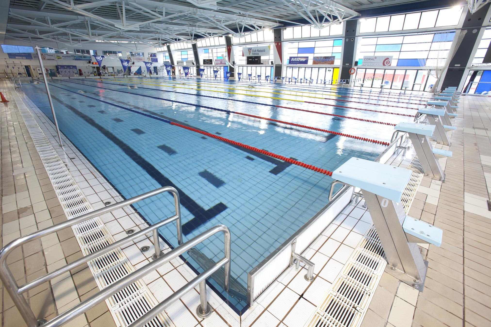

Escola Aquàtica Temporada 2022-2023
Al Club Natació Terrassa incentivem la pràctica d’aquest esport en nivells formatius, competitius i d’alt rendiment. Estimem el mèdi aquàtic i volem transmetre a tots els esportites valors com el compromís, el respecte o la responsabilitat. Al Club oferim unes instal·lacions de primer nivell per practicar l’esport més saludable. Porta un banyador, un casquet de bany i ulleres. No et cal res més per gaudir de l’aigua.
La natació és un dels esports fundacionals del club i, juntament amb el waterpolo, en constitueix la seva essència. En totes les seves especialitats i variants, ha estat l’esport que va seduir i continua seduint a petits, joves i grans. La història del CN Terrassa és també la història de la natació a Terrassa. Els pioners del club, Francesc i Pere Vacarisses, Jaume Altisen, Genari Vergara, Ricard Altayó, Enric Icart i Ramon Clapés, permeten a la ciutat de Terrassa conèixer un esport que, fins aleshores, només es popularitzava a través de les travessies de ports com el de Barcelona o el de Tarragona. Travessies que, generalment, eren organitzades per clubs de natació i que apropaven la població a la pràctica de la natació en un context lúdic i festiu. El 1935, es fitxa un entrenador, Francesc Bernal, procedent del CN Barcelona, amb l’objectiu de depurar l’estil dels nedadors del club i millorar-ne el rendiment. Els progressos tècnics donen resultat immediatament i es materialitzen en les figures de Ramon Sapés, Josep Franch, Francesc Gusi i Jaume Cardellach, que protagonitzen els primers resultats destacables de la història del club, que patirà, com el país, les conseqüències devastadores de la Guerra Civil. Esportivament, es triga vint anys en recuperar el nivell de preguerra, ja que no és fins el 1959 que es baten tots els rècords que s’havien assolit fins al començament del conflicte. Dos anys abans, el 1957, s’esdevenen els primers episodis que condueixen cap a un canvi d’època en la trajectòria del Club. Per primera vegada en molts anys el CN Terrassa aconsegueix tenir un saldo molt positiu en tots els aspectes. La nova generació de nedadors de final dels anys 50, que protagonitza aquest renaixement, està formada per Valentí Cardellach, Josep Codina i Antoni Codina, ajudats en els relleus per Enric Puig, Enric Boada, Sebastià Mas i Joan Torrens. Toni Codina es converteix en el primer nedador del club en baixar del minut en els 100 m lliures.
